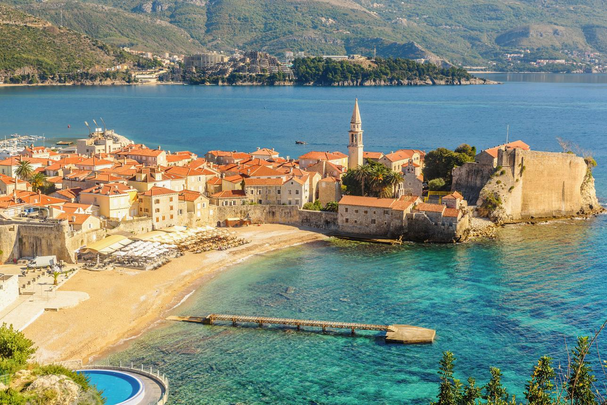
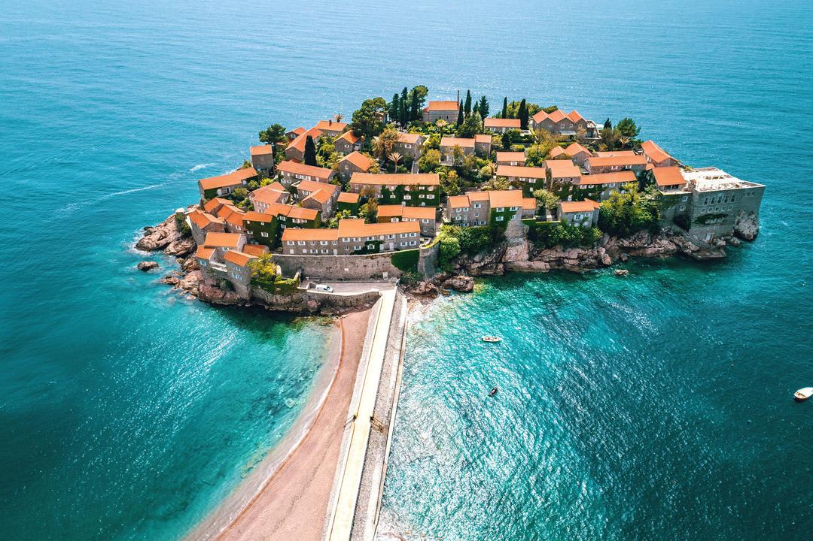
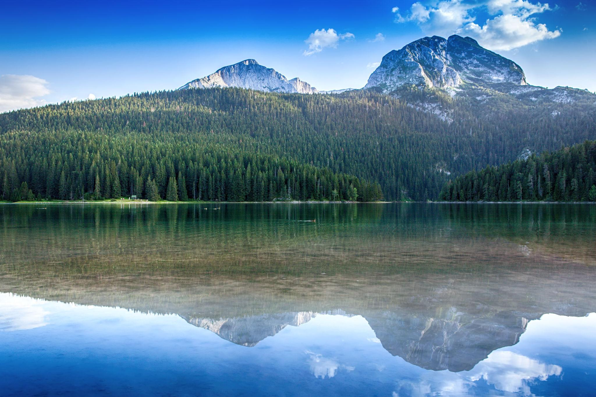
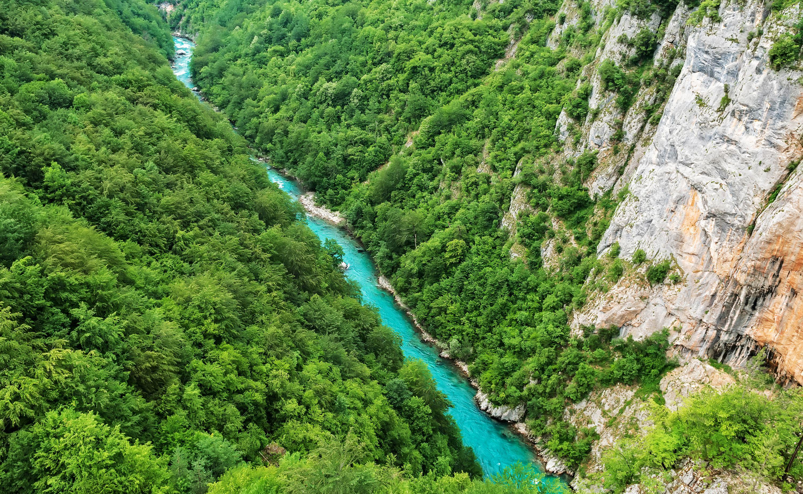
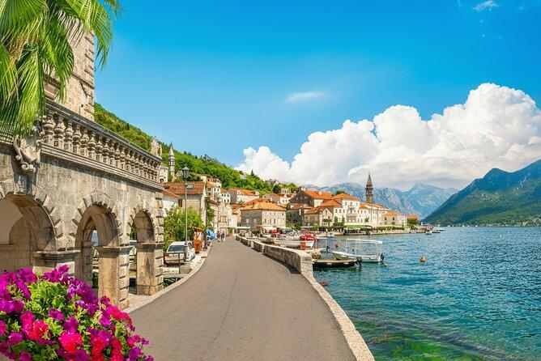
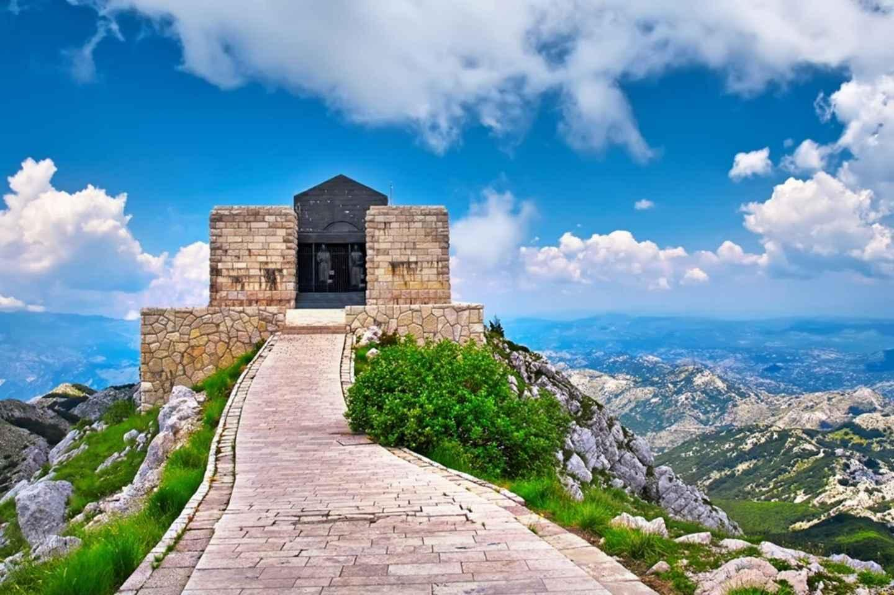
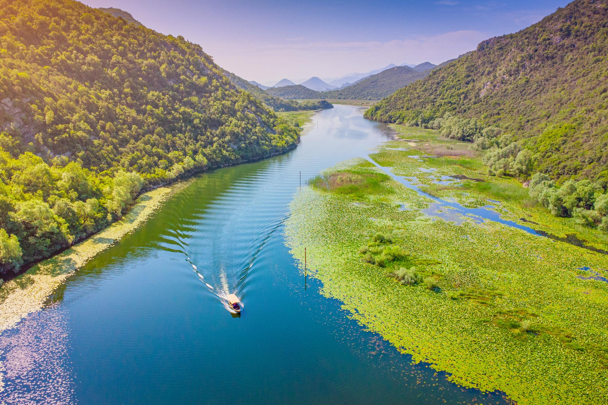
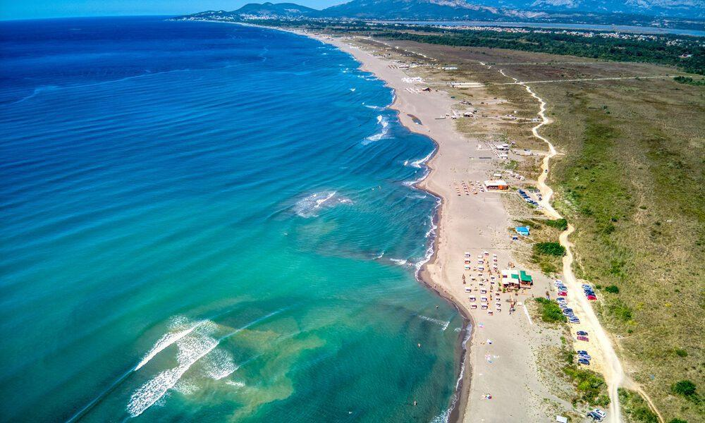
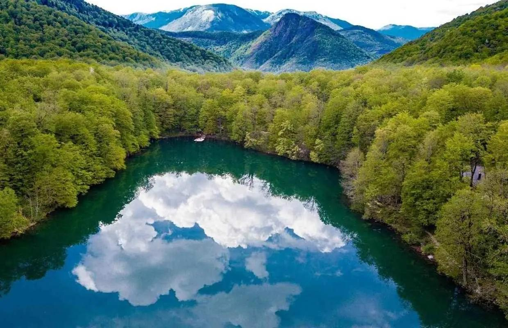

1. Kotor
Stari grad i prelijepi Bokokotorski zaliv.

2. Budva
Grad poznat po plažama i starom gradu.

3. Sveti Stefan
Prepoznatljivo ostrvce sa kamenim kućama i tirkiznim morem.

4. Durmitor
Planinski predjeli, šume i jezera za ljubitelje prirode.

5. Kanjon Tare
Impresivan kanjon i bistra rijeka idealna za rafting i avanture.

6. Perast
Mali primorski grad poznat po kamenim palatama i ostrvima.

7. Lovćen
Planina sa veličanstvenim pogledom i Njegoševim mauzolejem.

8. Skadarsko Jezero
Jezero bogato pticama, vodenim biljem i netaknutom prirodom.

9. Ulcinj
Duga pješčana plaža, sunce i opuštena mediteranska atmosfera.

10. Biogradska Gora
Nacionalni park sa starom šumom, planinama i mirnim jezerom.